의류기사 (2008-05-11 기출문제)
1과목: 피복재료학
1. 합성섬유를 방사할 때 연신을 하는 목적으로 가장 적합한 것은?
- 분자배향의 향상
- 권축의 생성
- 대전 방지
- 염색성 향상
(정답률: 알수없음)

2. 다음은 직물의 어떤 조직에 대한 설명인가?
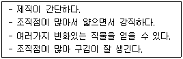
- 평직
- 능직
- 주자직
- 두둑직
(정답률: 알수없음)
3. 계면활성제의 작요엥 해당하지 않는 것은?
- 세정
- 수축
- 습윤
- 유화
(정답률: 알수없음)
4. 직기에서 개구를 형성하는 장치는?
- 경사빔
- 종광
- 바디
- 직물빔
(정답률: 알수없음)
5. 직물을 구성하는 경사와 위사가 교착하는 것에 해당하는 것은?
- 밀도
- 강도
- 조직
- 탄성
(정답률: 알수없음)
6. 다음 합성섬유 중 습열 조건에서 가장 높은 온도로 세트(set)가 되는 것은?
- 나일론 6
- 나일론 66
- 폴리에스테르
- 폴리프로필렌
(정답률: 알수없음)
7. 양모섬유에서 축융성과 가장 관계가 큰 것은?
- 레질리언스(resilience)
- 그리스(grease)
- 슈인트(suint)
- 스케일(scale)
(정답률: 알수없음)
8. 다음 중 직물의 대표적인 3원조직이 아닌 것은?
- 바스켓직
- 평직
- 능직
- 주자직
(정답률: 알수없음)
9. 다음 중 신축성이 가장 큰 실은?
- bulked yarn
- gas yarn
- slit yarn
- stretch yarn
(정답률: 알수없음)
10. 편성물의 특징으로 틀린 것은?
- 신축성이 크다.
- 함기량이 직물에 비해 크다.
- 컬업(curl-up)이 생긴다.
- 내마찰성이 크다.
(정답률: 알수없음)
11. 길이가 63000m이고 무게가 2520g인 실의 Tex 번수는?
- 40Tex
- 63Tex
- 90Tex
- 100Tex
(정답률: 알수없음)
12. 모직물의 주름치마를 만드는 가공은?
- 스카치 가드 가공
- 런던 슈렁크 가공
- 시로셋 가공
- P.P 가공
(정답률: 알수없음)
13. 셀룰로스계 섬유의 성질로서 틀린 것은?
- 좋은 흡수성
- 높은 탄성
- 높은 비중
- 우수한 내열성
(정답률: 알수없음)
14. 직물에 곰팡이가 생기는 것을 방지하기 위한 가공은?
- 방염가공
- 위생가공
- 방미가공
- 유산가공
(정답률: 알수없음)
15. 우주항공 분야의 소재로 사용하는 탄소섬유의 가장 대표적인 특징은?
- 열가소성이 크고, 형태 고정이 가능하다.
- 흡습성이 크고, 위생적이다.
- 탄성회복률이 크고, 내추성이 우수하다.
- 내열성과 강도 및 탄성률이 좋다.
(정답률: 알수없음)
16. 아세테이트(acetate)의 방사방법에 해당하는 것은?
- 습식방사
- 2욕 긴장방사
- 용융방사
- 건식방사
(정답률: 알수없음)
17. 다음 중 굴곡강도가 가장 큰 섬유는?
- 양모
- 아세테이트
- 견(생사)
- 유리
(정답률: 알수없음)
18. 양모섬유에 권축이 생기는 것과 가장 관계가 큰 것은?
- 조염 결합
- 시스틴 결합
- 스케일
- ortho 내섬유(cortex)와 para 내섬유
(정답률: 알수없음)
19. 일반적으로 사용하는 수봉사(手縫絲)에 해당하는 것은?
- 6합연사
- 4합연사
- 3합연사
- 2합연사
(정답률: 알수없음)
20. 드라이클리닝 용제에 약하여 세탁시 유의해야 하는 섬유는?
- 폴리에스테르
- 아크릴
- 폴리프로필렌
- 양모
(정답률: 알수없음)
2과목: 피복환경학
21. 함기성과 직물의 구성인자의 관계를 설명한 것 중 틀린 것은?
- 직물은 편성물보다 함기율이 크다.
- 실의 굵기에서 굵은 실일수록 함기율이 크다.
- 직물에서 기모직물이나 첨모직물의 함기율이 크다.
- 겉보기 비중이 낮을수록 함기율이 크다.
(정답률: 알수없음)
22. 기류 0.1m/sec, 공기온도 21℃, 상대습도 50% RH 상태에서 평균 피부온도가 33℃일 때 쾌적감을 느낄 수 있는 의복의 보온력은?
- 1clo
- 2clo
- 3clo
- 4clo
(정답률: 알수없음)
23. 피부온도를 측정할 수 있는 용구가 아닌 것은?
- 열전대 온도계
- 서미스터(thermistor) 온도계
- 서모그래피(thermography)
- 열전리식 복사계
(정답률: 알수없음)
24. 안정상태에서 인체의 피부로부터의 불감증설은 전체 불감증설의 약 몇 %인가?
- 약 30%
- 약 40%
- 약 60%
- 약 70%
(정답률: 알수없음)
25. 다음 중 여름철 내의에서 오염도가 높아 일반 세균수가 가장 많은 부위는?
- 등
- 가슴
- 소매부리
- 겨드랑이
(정답률: 알수없음)
26. 초과대사량의 기초대사량에 대한 비율인 R.M.R에 해당하는 것은?
- 노동작업시 대사량
- 에너지대사율
- 안정시 대사량
- 최대 에너지 발생량
(정답률: 알수없음)
27. 피부온도에 관한 설명 중 틀린 것은?
- 비만인 사람의 피부온도는 비교적 낮다.
- 환경기온이 높은 경우는 피부 혈류량이 증가하여 피부 온도는 상승한다.
- 환경기온이 낮은 경우는 피부혈관이 수축하여 피부온도는 저하된다.
- 피하지방의 많은 부분의 피부온도는 높다.
(정답률: 알수없음)
28. 피부온도의 특징에 대한 설명 중 틀린 것은?
- 환경의 온열조건에 영향을 받는다.
- 신체부위와 피하지방에 따라 다르다.
- 체내의 열생산량에 의해 영향을 받는다.
- 이마의 온도는 개인차가 크고 온열조건 변동으로 동요가 크다.
(정답률: 알수없음)
29. 일종의 알콜온도계로서 방향이 일정하지 않은 약한 기류를 측정하는데 사용하는 것은?
- 아우구스트(august) 건습온도계
- 카타(kata) 온도계
- 아스만(assmann) 통풍온도계
- 최고최저온도계
(정답률: 알수없음)
30. 피부온도에 영향을 미치는 요소가 아닌 것은?
- 환경의 조건
- 의복의 종류
- 피하지방의 두께
- 체표의 면적
(정답률: 알수없음)
31. 유아복의 일반적 조건과 가장 거리가 먼 것은?
- 보호성이 있을 것
- 입고 벗기가 용이할 것
- 내세탁성과 내구성이 강할 것
- 몸에 졸라매지 말고 헐거울 것
(정답률: 알수없음)
32. 인체에서 체온조절을 위해 땀을 분비하는 땀샘은?
- 갑상선
- 에크린선
- 아포크린선
- 임파선
(정답률: 알수없음)
33. 습도 60%, 기류 25cm/sec로 일정할 때 의복을 착용함으로TJ 기후조절을 할 수 있는 온도범위로 가장 적합한 것은?
- 0 ~ 10℃
- 5 ~ 15℃
- 10 ~ 26℃
- 20 ~ 35℃
(정답률: 알수없음)
34. 체온의 정상적인 하루 변동 범위로 가장 적합한 것은?
- 0.7~1.2℃
- 2.0~2.5℃
- 2.7~3.2℃
- 4.0~4.5℃
(정답률: 알수없음)
35. 용기에 직물을 덮지 않았을 때 물의 감소중량이 10g이고, 직물을 덮었을 때 물의 감소중량이 8g일 때 이 직물의 투습도는?
- 20%
- 25%
- 75%
- 80%
(정답률: 알수없음)
36. 환경기온에 적당한 의복기후를 형성하기 위해 검토할 사항과 가장 거리가 먼 것은?
- 의복의 재료
- 의복의 형태
- 의복의 착용성
- 의복의 감각
(정답률: 알수없음)
37. 다음 중 의복의 위생가공 목적에 해당되는 것은?
- 전염병 질환의 예방
- 내세탁성 증가
- 치수안정성 증가
- 세균 부착
(정답률: 알수없음)
38. 피복의 쾌적성에 관계되는 인체의 요소에 해당되지 않는 것은?
- 체온 조절
- 에너지 대사
- 복사와 대류
- 기후 순응
(정답률: 알수없음)
39. 섬유에 흡습량이 많아지면 나타나는 결과 중 틀린 것은?
- 함기량 감소
- 중량 증가
- 열전도율 감소
- 통기성 저하
(정답률: 알수없음)
40. 사람의 대뇌피질 중 전두엽에 존재하는 중추의 명령에 의해 생기는 땀으로, 손바닥, 발바닥, 겨드랑이 밑에서 생기며, 일반적으로 숙면할 때 많이 감소하는 것은?
- 정신성 발한
- 온열성 발한
- 불감증설
- 다한증(多汗症)
(정답률: 알수없음)
3과목: 의복설계학
41. 150cm 너비의 천으로 긴 소매 슈트를 만들려고 할 때 옷감의 필요량을 계산하는 방법 요소에 해당하징 않는 것은?
- 재킷 길이
- 시접(20~30cm)
- 엉덩이 길이
- 밑위 길이
(정답률: 알수없음)
42. 스커트 원형에 필요한 치수가 아닌 것은?
- 엉덩이 둘레
- 스커트 길이
- 엉덩이 길이
- 밑위 길이
(정답률: 알수없음)
43. 앞길 다트 중 기본 다트분으로 주로 가슴의 높이를 표현해 주는 것은?
- 숄더 다트(shoulder dart)
- 언더암 다트(under arm dart)
- 암홀 다트(arm hole dart)
- 네크라인 다트(neckline dart)
(정답률: 알수없음)
44. 다음 그림에 응용된 디자인 요소는?
- oval
- circle
- wave
- spiral
(정답률: 알수없음)
45. 1947년 크리스찬 디올이 발표한 좁은 어깨에 꼭 끼는 허리, 힙라인이 퍼지는 스커트로 이루어진 의복의 look은?
- sack look
- new look
- beatles look
- military look
(정답률: 알수없음)
46. 가봉의 시착시 체크 사항과 가장 거리가 먼 것은?
- 전체적인 실루엣
- 시접량
- B.P의 위치
- 칼라의 형과 크기
(정답률: 알수없음)
47. 다음 그림과 같이 길 원형을 활용하여 만든 패턴으로 완성된 옷의 모양은?
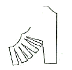
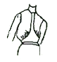
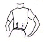
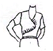
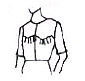
(정답률: 알수없음)
48. 의복제도에 필요한 부호 중 줄임에 해당하는 것은?
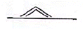
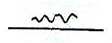
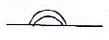
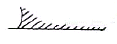
(정답률: 알수없음)
49. 플레어 스커트(flare skirt) 중 플레어의 너비를 디자인에 따라 정하는 형으로 각도를 다양하게 구성하는 것은?
- A라인(A-line) 플레어 스커트
- 세미 서큘러(semi circular) 플레어 스커트
- 벨(bell) 플레어 스커트
- 요크(yoke)를 댄 플레어 스커트
(정답률: 알수없음)
50. 다음 중 허리를 가늘게 보이게 하는 착시(錯視)의 방법으로 틀린 것은?
- 프린세스 라인(princess line)을 사용하는 방법
- 보레로 스타일(bolero style)을 사용하는 방법
- 큰 칼라를 사용하는 방법
- 벨트를 매지 않는 방법
(정답률: 알수없음)
51. 복식 디자인에서 비대칭 균형의 원리를 이용하여 만드는 것이 적합한 의복은?
- 캐주얼 웨어
- 이브닝 드레스
- 유니폼
- 평상복
(정답률: 알수없음)
52. 2단, 3단으로 된 스커트형으로 구성상 원형이 필요 없는 것은?
- 플리츠 스커트(pleats skirt)
- 티어드 스커트(tiered skirt)
- 랩 스커트(wrap skirt)
- 스트레이트 스커트(straight skirt)
(정답률: 알수없음)
53. 의복설계의 측정항목 중 S.W에 해당하는 것은?
- 앞길이
- 등길이
- 어깨너비
- 유두장
(정답률: 알수없음)
54. 무(고젯, gusset)를 대는 소매는?
- 기모노 슬리브(kimono sleeve)
- 돌먼 슬리브(dolman sleeve)
- 래글런 슬리브(raglan sleeve)
- 드롭 숄더 슬리브(dropped shoulder sleeve)
(정답률: 알수없음)
55. 의복 디자인을 할 때 황금 비례와 가장 관계가 없는 것은?
- 캐주얼한 summer suit의 재킷 길이와 스커트 길이의 비
- 원피스의 허리선과 스커트 길이의 비
- 블라우스의 소매 길이와 소매 너비의 비
- 캐주얼한 summer suit의 큰 포켓과 작은 포켓의 비
(정답률: 알수없음)
56. 다음 그림과 같은 스커트(skirt)의 명칭은?
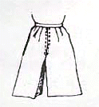
- 티어드 스커트(tiered skirt)
- 개더 스커트(gather skirt)
- 디바이드 스커트(divided skirt)
- 드레이프 스커트(draped skirt)
(정답률: 알수없음)
57. 다음 중 옷감의 패턴배치에서 굵기나 색이 다른 두 종류 이상의 줄무늬가 규칙적으로 있는 것은?
- 세로 줄무늬 옷감
- 가로 줄무늬 옷감
- 사설 줄무늬 옷감
- 한쪽 방향 줄무늬 옷감
(정답률: 알수없음)
58. 목 뒤에 세워진(stand) 부분이 없이 어깨선에 평평하게 눕는 칼라는?
- 플랫 칼라
- 롤 칼라
- 스탠드칼라
- 컨버터블 칼라
(정답률: 알수없음)
59. 겉감의 각 부위별 기본 시접으로 가장 부적합한 것은?
- 어깨와 옆선 : 2cm
- 스커트단 : 2cm
- 진동둘레 : 1.5cm
- 목둘레 : 1cm
(정답률: 알수없음)
60. 다음 중 플랫 칼라(flat collar)와 같은 방법으로 제도할 수 있는 칼라는?
- 리본 칼라(ribbon collar)
- 스탠드 칼라(stand collar)
- 세일러 칼라(sailor collar)
- 테일러드 칼라(tailored collar)
(정답률: 알수없음)
4과목: 봉제과학
61. 어떤 봉제작업에 대한 실작업시간이 70초, 여유율이 20%일 때, 표준시간은?
- 74초
- 84초
- 140초
- 160초
(정답률: 알수없음)
62. 다음의 공정도시 기호 유형이 의미하는 것은?
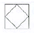
- 품질검사를 주로 하면서 수량검사도 한다.
- 가공을 주로 하면서 운반도 한다.
- 가공을 주로 하면서 수량검사도 한다.
- 수량검사를 주로 하면서 품질검사도 한다.
(정답률: 알수없음)
63. 다음 중 생산 목표량을 산출할 때 필요하지 않은 사항은?
- 작업자수
- 정미 총 가공시간
- 여유율
- 설비대수
(정답률: 알수없음)
64. 동작분석의 결과가 아닌 것은?
- 피로 감소
- 능률 향상
- 생산시간 단축
- 생산원가 향상
(정답률: 알수없음)
65. 재단 공정 중 원단 절감에 가장 큰 영향을 미치는 공정은?
- 그레이딩
- 마킹
- 연단
- 검단
(정답률: 알수없음)
66. 봉축율(%) 계산식으로 옳은 것은? (단, ℓ: 봉제 전의 봉제선의 길이, ℓ‘: 봉제 후의 봉제선의 길이)
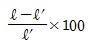
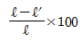
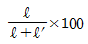
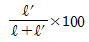
(정답률: 알수없음)
67. 계획생산량 × 표준시간으로 계산되는 공수(工數)는?
- 능력공수
- 부하공수
- 여력공수
- 표준공수
(정답률: 알수없음)
68. 다음 중 생산관리에 해당되지 않는 것은?
- 동작분석
- 시간분석
- 색상분석
- 가동분석
(정답률: 알수없음)
69. 침봉사(needle thread) 1가닥만으로 이루어진 록 스티치(lock stitch)는?
- 멀티 헤드 체인 스티치(multi head chain stitch)
- 핸드 스티치(hand stitch)
- 단봉사 록 스티치(single thread lock stitch)
- 이중 록 스티치(double lock stitch)
(정답률: 알수없음)
70. 재봉기의 표시방법 중 본봉, 직선봉, 단평형의 표시 기호는?
- LS1
- EF4
- CM3
- DT6
(정답률: 알수없음)
71. 신축성이 큰 천을 신축성이 작은 천에 봉합할 때 퍼커링의 발생은?
- 퍼커링이 일어나지 않는다.
- 퍼커링이 많이 일어난다.
- 신축성이 같은 천을 봉합할 때보다 퍼커링 발생이 적게 일어난다.
- 신축성이 같은 천을 봉합할 때와 퍼커링 발생이 거의 같다.
(정답률: 알수없음)
72. 다음 스티치 밀도에 따른 시임강도의 변화를 나타낸 그래프에서 가장 바람직한 스티치 밀도를 가리키는 곳은?
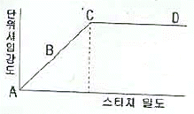
- A
- B
- C
- D
(정답률: 알수없음)
73. 다음 중 스티치 형식과 유형번호의 연결이 틀린 것은?
- 단환봉(single thread chain stitch : 100
- 본봉(lock stitch) : 300
- 오비록봉(overlock stitch) : 500
- 편평봉(flat lock stitch) : 400
(정답률: 알수없음)
74. 다음 중 봉제시스템의 주요 설계 요소에 해당되지 않는 것은?
- 시스템 계획
- 시스템 디스크 디자인
- 프로세스 디자인
- 시스템 방안 검토
(정답률: 알수없음)
75. 재단작업시 설명으로 옳은 것은?
- 칼라, 커프스 등 작은 부분은 작은 패턴 절단 후에 밴드 나이프 절단기로 절단한다.
- 패턴과 재단된 옷감의 편차는 있어야 한다.
- 곡선인 암홀이나 네크라인 등은 가장자리가 각이 나지 않도록 하기 위해 멈춤이 없이 계속해서 절단해야 한다.
- 올이 풀리지 않는 옷감은 5mm이상을 넘어야 한다.
(정답률: 알수없음)
76. 제도된 기본 패턴을 중심으로 하여 바깥쪽의 방사선으로 정점을 확대 또는 축소시키면서 그레이딩하는 방법은?
- 컴퓨터 시프트법(computer shift method)
- 래디얼 시프트법(radial shift method)
- 트랙 시프트법(track shift method)
- 레이저 시프트법(laser shift method)
(정답률: 알수없음)
77. 다음 중 간접인건비에 포함되는 비용이 아닌 것은?
- 재료구입에 소요되는 인건비
- 운반작업에 소요되는 인건비
- 준비작업에 소요되는 인건비
- 재단작업에 소요되는 인건비
(정답률: 알수없음)
78. 봉제품 생산형태 중 싱크로나이즈 시스템에 해당되는 것은?
- 소품종 대량생산
- 중품종 중량생산
- 다품종 소량생산
- 중품종 소량생산
(정답률: 알수없음)
79. 다음과 같은 봉제 공정분석표에서“30”의 의미에 해당하는 것은?
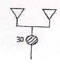
- 봉제품 소요 부속수
- 봉제품 부속 기호
- 봉제품 단위 명칭
- 봉제품 제조 작업시간
(정답률: 알수없음)
80. 직선 또는 완만한 곡선 모양의 패턴에 가장 적합한 재단기는?
- 수직칼 재단기
- 밴드 나이프 재단기
- 원형칼 재단기
- 프레스 재단기
(정답률: 알수없음)
5과목: 섬유제품시험법 및 품질관리
81. 양모섬유에 가장 적합한 안전 다림질 온도는?
- 120℃
- 150℃
- 180℃
- 220℃
(정답률: 알수없음)
82. 다음 중 섬유제품의 품질표시기준에 꼭 필요한 시험항목은?
- 혼용율
- 인장강도
- 필링
- 대전성
(정답률: 알수없음)
83. 마찰견뢰도 시험에서 백면포에 오염을 판정하기 위해 900g의 하중을 가한 마찰자를 백면포로 단단히 싸서 시험편 위에서 측정하는 10cm간의 왕복횟수와 시간으로 옳은 것은?
- 10회/30초
- 10회/20초
- 10회/10초
- 10회/5초
(정답률: 알수없음)
84. 일광에 의해 상해된 양모를 티오시안산염으로 처리했을 때 나타나는 색상은?
- 핑크색
- 흑색
- 초록색
- 무(無)색
(정답률: 알수없음)
85. 다음 단면 그림에 해당하는 섬유는?
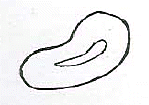
- 면
- 양모
- 아세테이트
- 나일론
(정답률: 알수없음)
86. 어떤 제품에서 모평균의 신뢰구간을 구하려고 모집단으로 부터 16개의 시료를 뽑아 측정한 결과
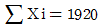
이었다. σ=4.0 이라면 신뢰도 95%의 신뢰구간의 하한선은?- 114.52
- 118.04
- 123.86
- 132.60
(정답률: 알수없음)
87. 모표준편차를 모르고 있을 때 모평균의 신뢰구간 측정에 사용되는 분포는?
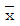
분포- t분포
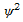
분포- F분포
(정답률: 알수없음)
88. 양모섬유 상해 시험법 중 화학 반응을 이용한 방법으로 가장 적합하지 않는 것은?
- 용해도 측정법
- 인텅스텐산에 의한 침전법
- 가용성 질소를 측정하는 방법
- 팽윤 거동 관찰법
(정답률: 알수없음)
89. 직물 표면의 마찰계수를 측정하기 위하여 다음 그림과 같은 경사판법을 이용하였다. 500g의 추 W를 얹어 그림과 같은 상태에서 표면의 직물이 움직이기 시작하였다면 이 직물의 마찰계수는?
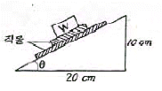
- 200
- 30
- 2
- 0.5
(정답률: 알수없음)
90. 어떤 시료의 함수율이 2.4%일 때 수분율은?
- 2.34%
- 2.40%
- 2.46%
- 2.56%
(정답률: 알수없음)
91. 실의 굵기 표시방법이 아닌 것은?
- 데니어(D)
- 텍스(Tex)
- 면사 번수(‘s)
- 루플(loop)
(정답률: 알수없음)
92. 다음 중 혼방되어 있는 섬유의 감별수단으로 가장 많이 사용하는 시험방법은?
- 연소성 시험
- 용해성 시험
- 인장강도 시험
- 정색반응 시험
(정답률: 알수없음)
93. 다음 중 아크릴섬유와 양모섬유로 구성된 혼방직물의 혼용율을 용해도 시험방법으로 측정하고자 할 때 가장 적합한 시약은?
- 아세톤
- 차아염소산나트륨 용액
- 20% 염산
- 60% 황산
(정답률: 알수없음)
94. 두꺼운 모직물인 트위드(tweed)를 봉합하기에 가장 적합한 재봉기 바늘의 번호는?
- 9호
- 11호
- 14호
- 20호
(정답률: 알수없음)
95. 다음 중 직물의 방추도 시험에 해당되는 시험 방법은?
- Cantilever method
- Heart loop method
- Brush and sponge method
- Monsanto method
(정답률: 알수없음)
96. 염색물의 일광견뢰도 시험방법과 관련이 없는 것은?
- 표준 퇴색지
- 표준 청색염포
- 다섬 교직포
- 광도 시험지
(정답률: 알수없음)
97. 봉제품의 평가에 있어서 봉제전의 원단 길이 3cm가 봉제후에 1cm로 되었을 때의 개더링(gathering)율은?
- 33.3%
- 66.7%
- 200%
- 300%
(정답률: 알수없음)
98. 다음 섬유 중 상온에서 20% 염산에 녹는 것은?
- 양모
- 아세테이트
- 나일론
- 아크릴
(정답률: 알수없음)
99. 어떤 직물에서 봉제전의 봉제선 길이 90cm가 봉제후에 100cm로 되었을 때 스트레치율은?
- 10%
- 11.1%
- 88.9%
- 90%
(정답률: 알수없음)
100. 다음 그림에서 섬유제품의 취급에 관한 표시에 대한 설명 중 틀린 것은?
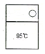
- 물의 온도 95℃를 표준으로 세탁할 수 있다.
- 삶을 수 있다.
- 세탁기로 세탁할 수 없다.
- 세제의 종류에 제한을 받지 않는다.
(정답률: 알수없음)